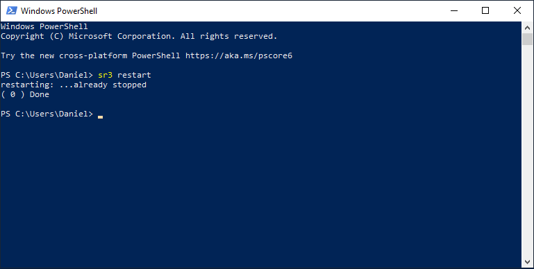
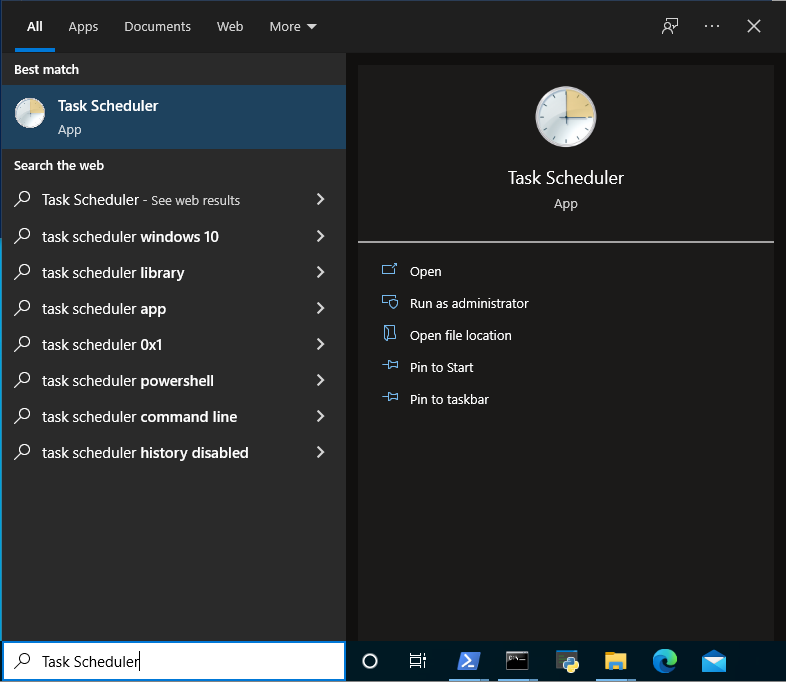
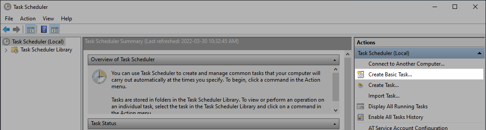
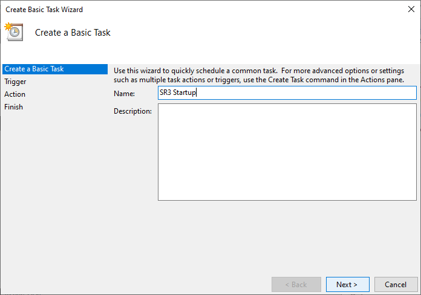
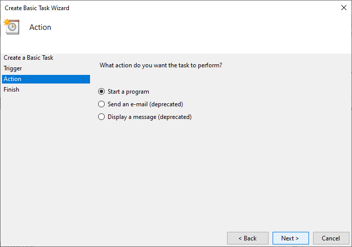

Windows user manual
This document teaches novice user with Python on Windows how they could easily run Sarracenia in various ways. The screenshots were taken from Windows Server 2012 R2 Standard edition. Feel free to create issues if you believe that this document could be enhanced with one (or more) important case(s).
Running Sarracenia with a Command Prompt
From the Start Menu:
Click on Sarracenia (it will execute sr3.exe restart):

This will pop Sarracenia’s Command Prompt, start Sarracenia processes as instructed by your configurations and show logging information.

Keep this window alive until you are done with Sarracenia. Closing it or typing ctrl-c will kill all Sarracenia processes. You may also want to restart Sarracenia which will stop those processes cleanly.
From a Windows Powershell session:
If sr3 is not found at the command line, even after a pip install metpx-sr3, then it may be because pip does not get the entry points added to the Power Shell Path and you may need to do that manually:
PS C:\Users\SilvaP2> sr3
sr3 : The term 'sr3' is not recognized as the name of a cmdlet, function, script file, or operable program. Check the
spelling of the name, or if a path was included, verify that the path is correct and try again.
At line:1 char:1
+ sr3
+ ~~~
+ CategoryInfo : ObjectNotFound: (sr3:String) [], CommandNotFoundException
+ FullyQualifiedErrorId : CommandNotFoundException
PS C:\Users\SilvaP2>
One can validate that the metpx-sr3 package is installed with pip list … it should be in the list. then look where the entry point scripts are located:
PS C:\Users\SilvaP2> pip show -f metpx-sr3
Name: metpx-sr3
Version: 3.0.42
Summary: Subscribe, Acquire, and Re-Advertise products.
Home-page: https://github.com/MetPX/sarracenia
Author: Shared Services Canada, Supercomputing, Data Interchange
Author-email: Peter.Silva@canada.ca
License: GPLv2
Location: c:\users\silvap2\appdata\local\packages\pythonsoftwarefoundation.python.3.10_qbz5n2kfra8p0\localcache\local-packages\python310\site-packages
Editable project location: C:\Users\SilvaP2\Sarracenia\sr3
Requires: appdirs, humanfriendly, humanize, jsonpickle, paramiko, psutil, python-magic-bin, watchdog
Required-by:
Files:
..\Scripts\sr3.exe
..\Scripts\sr3_post.exe
..\Scripts\sr3_tailf.exe
__editable__.metpx_sr3-3.0.42.pth
__editable___metpx_sr3_3_0_42_finder.py
__pycache__\__editable___metpx_sr3_3_0_42_finder.cpython-310.pyc
metpx_sr3-3.0.42.dist-info\AUTHORS.rst
metpx_sr3-3.0.42.dist-info\INSTALLER
metpx_sr3-3.0.42.dist-info\LICENSE.txt
metpx_sr3-3.0.42.dist-info\METADATA
metpx_sr3-3.0.42.dist-info\RECORD
metpx_sr3-3.0.42.dist-info\REQUESTED
metpx_sr3-3.0.42.dist-info\WHEEL
metpx_sr3-3.0.42.dist-info\direct_url.json
metpx_sr3-3.0.42.dist-info\entry_points.txt
metpx_sr3-3.0.42.dist-info\top_level.txt
PS C:\Users\SilvaP2>
From this we learn that the program files are in:
c:\users\silvap2\appdata\local\packages\pythonsoftwarefoundation.python.3.10_qbz5n2kfra8p0\localcache\local-packages\python310\site-packages\Scripts
So can add that Scripts directory to the powershell Profile. (On my laptop, it is in DocumentsWindowsPowerShellMicrosoft.PowerShell_profile.ps1
$env:Path += ';c:\users\silvap2\appdata\local\packages\pythonsoftwarefoundation.python.3.10_qbz5n2kfra8p0\localcache\local-packages\python310\Scripts'
$env:EDITOR = 'code.cmd'
The first line sets the Path so that sr3 entry points will be found. The (optional) second line, sets the EDITOR variable, so that the sr3 edit command will open the configuration files in VSCode. One must launch a new Powershell for the settings to take effect.
Launch a Powershell  session and type this command at the prompt:
session and type this command at the prompt:
sr3 restart
This will start Sarracenia processes as instructed by your configurations and show logging information
Keep this Powershell session alive until you are done with Sarracenia. To stop Sarracenia you may type:
sr3 stop
This will stop all Sarracenia processes cleanly as would do a restart. Closing this window will also kill all processes.
From Anaconda Prompt:
Run this command:
activate sr3 && s3r restart
Running Sarracenia without a Command Prompt
Here is a case where someone (like a sysadmin) needs to run Sarracenia without a Command Prompt and ensure that the system starts at Windows startup. The obvious way of doing it would be from the Task Scheduler.
From the Task Scheduler:
Open Task scheduler:
Select Create Basic Task… from the action panel on the right:
This will launch the Create Basic Task Wizard where you …
Fill the name:
Choose the trigger:

Choose the action:
Define the action:

Review the task and choose Finish:

Open the Properties dialog and choose Run whether user is logged on or not and Run with highest privileges:

The task should now appear in your Task Scheduler Library with the status Ready.

Then, you may run it immediately with the button.